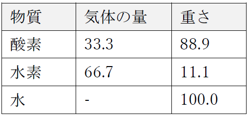

みなさん、まだロウソクに飽きていないみたいですねえ。さもなきゃこんなにロウソクに興味を持ってくれるはずはないですからね。
さてロウソクが燃えているときには、われわれの身の回りにあるのとまったく同じ水ができるのがわかりました。そしてこの水をもっと調べてみると、その中にあの水素というへんてこな物質があるのがわかりました。とても軽い物質で、このびんの中に少し入ってます。さらに、その水素がよく燃えて、燃えると水ができるのも見ました。そして確か、化学力というかパワーというかエネルギーをうまくしつらえて、この電線に力が流れてくるような仕掛けをちょっとお目にかけたはずです。そして、この力を使って水を分解して、水の中に水素以外になにがあるのかを見てみよう、とも申し上げましたね。というのも、覚えていると思いますが、水をあの鉄の管に通したら、気体はたくさん出てきましたけれど、蒸気としてそこに通した水だけの重量はとても回収できていなかったでしょう。じゃあ、他にはどんな物質があったか見なきゃいけませんね。
さて、この道具の特徴と使い方を理解してもらうために、ちょいといくつか実験をやってみましょう。まずは、素性のわかった物質をもってきて、この道具がそれになにをするか見てやりましょう。こっちにあるのは銅です（これがいろいろ変化をするのでご覧じろ）。そしてこっちにあるのが硝酸。この硝酸はとっても強力な化学物質なので、これを銅に注ぐと強力な反応が起きます。ほら、きれいな赤い蒸気があがってますね。でも、この蒸気はいらないので、アンダーソンさんにしばらく煙突の近くに持っていってもらいましょう。実験の実用性と美しさだけを使って、いやな部分はなしですませたいですから。
フラスコに入れた銅は溶けます。そして酸と水を変化させて、銅やなんかを含む青い液体に変えます。こいつにボルタ電池がどう作用してくれるかを見せてあげましょう。で、その間に、このボルタ電池がどんな力を持っているか、別の実験をやってみましょうか。
ここにあるのは、われわれにとっては水みたいな物質です——つまり、まだわたしたちの知らないものを含んでいます。水も、まだわれわれの知らないものを含んでいましたよね。さて、この塩の一種の溶液原注4-1を紙に垂らして、広げてやりましょう。それで電池をかけて、なにが起こるか見てみます。３、４種類くらいのことが起きるので、それを利用してやりましょう。
ではまず、このぬらした紙をブリキホイルの上に広げます。こうすると全部きれいにしておけるし、電気をかけるときにも便利なんですな。そしてこの溶液は、紙につけようとブリキに広げようと、その他わたしがいままで接触させたすべてのものに対して、まるで変化しません。だからみんな、あの道具との関連で使ってやっていいわけです。
でもまず、あの道具がちゃんと準備万端か確かめましょうね。さあ、あの電線です。こないだ見たのと同じ状態になってるかな？ すぐにわかります。こうして電線をくっつけてみると、まだ電気は出てきません。それを伝えるもの——電極、という名前です——が止めてあるからです。でもアンダーソンさんが、いまの［と電線の端にとつぜん生じた火花をさす］で、電池の用意ができたという電報を送ってくれました。では、実験をはじめる前に、アンダーソンさんにまた、この背後の電池の電極をはずしといてもらいましょう。で、両極をプラチナの針金でつないでみます。このかなり長い電線に火をおこせれば、この先の実験でもだいじょうぶでしょう。さあ、こいつの力をごろうじろ。［電線で両極をつなぐと、その間の電線は真っ赤になった。］電力が電線を見事に通ってますねー。この電線はわざと細いものをつかって、こういう強力な力があるのをお見せできるようにしてます。で、これで電力があるのがわかったので、水の検討に移りましょうか。
ここにプラチナのかけらが２つあります。これを、この紙（さっきのブリキ板上のぬらした紙）にこうしてのっけて、と。するとなにも起きません。どけてみても、目に見える変化はなにもなくて、さっきのままですな。でも、こんどはなにが起きるでしょう。こうして二つの極を持ってきて、それをプラチナ板に片っぽだけくっつけてみます。どっちも、なにもしてくれません。どっちも、まったく無反応です。でも、同時にこうやってくっつけると、ほーら見てください［電極のそれぞれの下に、茶色い点があらわれる］。起きている結果を見てくださいよ。下の白いものから、何かを分解して茶色いものを取り出してるんですな！ じゃあこれもまちがいないはず：こんなふうにして、電極の片っぽを紙の裏のブリキにつけて——おお、なんとも見事に紙に反応が出てくるじゃないですか。字も書けちゃえそうですね、やってみましょう——いわば電報、ですかな［講師、ここで電極の針金を片方使って、「juvenile」ということばを紙に書いて見せる］。ほらほら、実にきれいな結果が出てきます！
ごらんの通り、この溶液から、これまで知らなかった何かを引っ張り出したわけです。じゃあさっきのフラスコをアンダーソンさんからもらって、そいつをここから引っ張り出せるか見てやりましょう。こいつはご承知のとおり、こっちで他の実験をやっている間にできた、銅と硝酸でできた液体です。で、この実験はずいぶんあわててやっているので、ちょっと失敗するかもしれませんが、でも前もって用意しておくよりは、わたしがなにをやってるのか、ごらんにいれたかったんですよ。
さあ、どうなるでしょう。プラチナ板二つがこの道具の端っこです（というか、これからそうします）。そしてこれを、あの溶液と接触させましょう。ちょうどしばらく前に紙でやったのと同じです。わたしたちにしてみれば、溶液が紙の上だろうとびんの中だろうと、装置の電極両方をくっつければ同じことです。プラチナ板を片方だけ入れると、入ったときと同じようにきれいにピカピカの状態で出てきます［とプラチナ板を電池につながずに浸す］；でも電力をつないでそれをかけてやりますと［プラチナ板はバッテリーにつながれて、またもや溶液に浸される］、このように［とプラチナ板の片方を見せて］、すぐに銅になっちゃったみたいに見えますね。まるで銅板です。そしてこっちは［ともう片方のプラチナ板を見せる］かなりぴかぴかのままです。この銅に覆われたやつを持ってきて、もう片方と取り替えてみましょう。すると銅は右手側から離れて、左側のに移ります。さっきは銅に覆われたものが、こんどはきれいになって、きれいだった方がこんどは銅におおわれています。したがって、この溶液に入れたのと同じ銅を、こうやってこの装置で取り出せるんだ、というのがわかりますね。
じゃあこの溶液はちょっと置いといて、この装置が水にはどんな力を持っているか見てみましょう。ここにプラチナ板が二枚あって、これを電池の両極にしたいと思います。で、この（Ｃ）は、水を分解してその構成を見せられるような形にしてある、ちょっとした容器ですな。この二つのコップ（ＡとＢ）には水銀を入れておきます。この水銀は、プラチナ板とつながった電線の端に触れるようになってます。容器（Ｃ）に、ちょっと酸の入った水を注ぎましょう（酸を入れるのは、反応を起こす助けとしてだけで、酸そのものは何の変化も起こしません訳注：水だけでは電気が流れずに電気分解ができない。このため、ほかのものを加えて電気が通るようにするのだ。）。そして、この容器のてっぺんにつながっているのは、曲がったガラス管（Ｄ）で、これは先日の、銃身を熱したときの実験と似てるでしょう。これがこっちのびん（Ｆ）の下にまで通ってきます。
で、これで装置の準備ができたので、これでなんとか水をつついてやりましょう。こないだの実験では、赤熱した管の中に水を送り込みました。こんどは、こっちの容器の中身に電気を通してやります。水が沸騰するかもしれませんね。沸騰したら、蒸気が出てくるでしょう。そしてご存じのように、蒸気は冷やすと凝集します。だからそれを見れば、水が沸騰したのかどうかはわかるでしょう。でも、沸騰しないで、何かほかの反応が出てくるかもしれませんよ。これは実験をやってみて確かめましょう。
さあ、電線の一つをこっち（Ａ）につなげて、反対側をこっち（Ｂ）につないでやります。じきに何か変わったことが起きるかどうかがわかります。ほーら、派手にぐらぐら沸いているみたいですね。でも本当に沸騰してるんでしょうか？ でてきてるものが蒸気かどうか、調べてやりましょう。もしこの水からあがってきているのが蒸気なら、じきにこっちのびん（Ｆ）が水蒸気でいっぱいになるはずです。でも、これは蒸気かな？ まさか。だって、ずっとなにも変化しないままでしょう（訳注：水蒸気なら、いずれ水に戻って気体の部分がなくなるか、だいぶ減るはずだ、といいたいのだ。）。だからこれは蒸気じゃありえません。なにか変化しない気体なんです。なんでしょうか。水素かな？ それとも何か別のもの？ じゃあ調べてみましょう。水素なら、燃えるはずです。［訳注：ここで講師は、集まった気体に火をつけてみたはず。で、かなり大きな火と音が出たはず。］
はい、確かに燃えるものでした。でも、水素の燃え方とはちがってましたね。水素ならあんな音はしません。でも燃えたときの炎の色は、確かに水素っぽかったですね。でもあの気体は、空気がなくても燃えるんです。それをお見せするために、こっちの装置を用意しました。これでこの実験の特殊な部分がよくわかります。口の開いた容器ではなく、口の閉じた容器を持ってきましたよ（それにしてもこの電池はみごとなエネルギーですね、水銀まで沸騰して、すべて予定通り——なにもまちがった点はないです、実に見事に予定通りです）。で、さっきの気体が、なんだかわからないけれど、空気なしでも燃えて、その点で空気なしでは燃えないロウソクとはちがうのだということをお見せします。
やり方はこんな具合です。ここにガラスの容器（Ｇ）があります。ここにプラチナ線が二本［I，K］はまっていて、そこから電気を送り込めます。さて、この容器を空気ポンプにつないで、中の空気を吸い出しちゃいましょう。それでこっちに持ってきて、さっきのびんにつないでやって、水にボルタ電気を作用させて、水からつくりだした気体を、こっちの容器に移してやります——ああ、いまのところまでは言えますよね。さっきの実験でわたしたちは本当に、水をこの気体に変えたんだ、ということは言っていいですよね。水の状態を変えただけでなく、それを完全に本当にこの気体に変えて、この実験で分解された水はすべてこっちに来ているわけですね。
で、この容器（Ｇ，Ｈ）をここんところ（Ｈ）にねじこんで、パイプがしっかりつながっているようにして、これでコック［Ｈ，Ｈ，Ｈ］を開きます。すると、［Ｆの］水位を見てやると、気体がこっちに上がってきたのがわかりますね。さあコックを閉じましょう。容器にはさっきの気体がいっぱいです。で、この中にしっかりおさまったところで、こっちのライデンびん［Ｌ］から電気の火花を送り込んでやります。するとこの容器は、いまは透明でピカピカですが、これが曇るでしょう。音はしません。この容器は、爆発にも耐えられるくらい強いからです。［びんに火花が送り込まれて、爆発性の混合気体に点火。］いまのまばゆい光を見ましたか？ もう一回この容器をびんにつなげて、コックを開くと、気体がまた入ってくるのがわかります。［コックをまた開く。］さっきまであった気体は［と最初にびんに集められて、電気の火花で点火された気体をさす］、ごらんの通り消えてしまったわけですね。その気体があった場所が空っぽになったもので、こうやって新鮮な気体がまた入ってきたわけです。で、いまのをもう一回繰り返すと［とさっきの実験を繰り返す］、またこれは空っぽになります。こうして［Ｆの］水位が上がるからわかりますね。いまの爆発の後では、容器は必ず空っぽになります。水が電池によって分解された結果できた、気体だか蒸気だかは、火花のおかげで爆発して、水に戻るからです。そしてだんだん、この上のほうの容器からは水滴が側面をちょろちょろ落ちてきて、下の部分にたまってきますよ。
ここでわたしたちは、水だけを相手にしていて、空気はまったく見ていません。ロウソクからの水は、空気の助けがあってできたものでした。でもこうやると、これは空気とぜんぜん関係なしに作れます。したがって水は、ロウソクが空気からとっているもう一つの物質を含んでいるはずです。そしてその物質は、水素と組合わさると、水になる、ということですな。
ついさっきあなたたちが見たのは、この電池の片っぽが銅をつかまえて、この青い溶液の入った容器からその銅を抜き出すところでした。それはこの電線によるものでしたね。そしてもし電池が、いま作っては取り出したみたいな金属溶液でこんなことができるなら、これで水の構成物質を分解して、それをこっちとあっちに入れられる、と考えてもよさそうなもんじゃないですか。じゃあそれぞれの極——つまり電池の金属の端っこ——をとって、こんな装置を使ってその極をずっと離してやったとき、水がどうなるかを見てやりましょう。一つをこっち（Ａ）に、もう一つをあっち（Ｂ）につけます。そして、穴の空いた小さな棚板を使って、それをそれぞれの極につけます。そして電池の二つの極から出てくるものが、それぞれ分離した気体として出てくるようにしましょう。ほら、水は蒸気になったんじゃなくて、なんか気体になりましたよね。電線はいま、この水の入った容器と完全にきっちりつながっていて、ほーら、あぶくが出てきてますね。このあぶくを集めて、それがなんだか見てみましょう。こっちにガラスの筒（Ｏ）がありますから、こいつに水をいっぱい入れて、（Ａ）の側にかぶせましょう。それと筒をもう一つ（Ｈ）使って、これを反対側にかぶせます。というわけで、左右二つの装置になって、どっちの板からも気体が出てきてます。ほーらほら、右側のやつ（Ｈ）はすごい勢いで満杯になってきました。左のやつ（Ｏ）はそれほどの勢いじゃありません。ちょっとあぶくを逃がしちゃいましたけれど、でも反応はほとんど変わらずに続いていますね。で、筒の大きさがちょっとちがうのではっきりしないでしょうけれど、こっちの（Ｈ）には、こっちの（Ｏ）やつの倍の量の気体がたまってるんです。どっちの気体も無色です。どっちも凝集しないで水の上でじっとしてます。どこをとっても、どっちも同じですね——ああ、同じといってもつまり、見かけ上は、ということですけど。そしてここで、この物質をそれぞれ調べてみて、それがなんだかつきとめられるわけです。なかなかたっぷりあるので、実験するのも楽ですね。まずこっちのびん（Ｈ）を持ってきましょう。この中身が水素だ、というのがわかるはずですよ。
水素というのがどんな性質を持っていたか、考えてみてください——軽い気体で、さかさまのびんの中でじっとしていて、びんの口のところで淡い色の炎をあげて燃えましたよね。この気体が、そういう条件をすべて満たすかどうか、見ていてください。水素なら、こうやってびんをひっくり返しておけば、中にじっとしてるはずです。［そこに火がつけられ、水素が燃えた。］
じゃあ、もう片っぽのびんの中には、なにがあるんでしょうか。水素とこの気体とを混ぜたら、爆発する気体になるのは知ってますね。でもこいつはいったいなんでしょう。水のもう一つの構成物質で、したがって水素を燃えるようにした物質にちがいないものは？ 容器に入れた水が、この二つの気体があわさってできていたことはわかっています。その片方は水素でした。では、実験前に水の中にあって、いまこうして独り立ちさせたものはなんでしょうか。この木ぎれに火をつけて、中に入れてみましょう。気体そのものは燃えないけれど、木ぎれは燃えます。［講師、木の端に火をつけて、それを気体のびんに入れる。］ほーら、木の燃えかたが強力になりましたね。空気よりもずっとよく木を燃やしてくれます。そしてこれで、水の中に入っていた残り一つの物質、そしてロウソクが燃えて水ができたときの物質は、空気からとられたはずだというのがわかります。さあ、これをなんと呼びましょうか。Ａ、Ｂ、Ｃとか？ Ｏと呼びましょう——酸素（Oxygen）です。立派な、よくわかる——そんなひびきの名前ですな。というわけで、水の中にあって、そのかなりの部分を占める酸素というのは、こいつなわけです。
これでいままでの実験や研究が、もっとはっきりわかるようになってきましたね。というのも、こういうものを一、二回ほど検討すると、じきにロウソクがなぜ空気中で燃えるかがわかるようになるからです。わたしたちがこうやって水を分析すると——つまり、そのパーツを分離したというか電気分解してやると、水素が２に対して、それを燃やす物体が１出てきます。それを書いたのが次の図で、重さもいっしょに書いてあります。そしてこれで、酸素というのが水素にくらべるとずいぶん重たい物質なんだな、というのがわかります。この酸素が、水のもう一つの要素なんです。
表 水の構成
ここで、この酸素をたっぷり手に入れるにはどうしたらいいかをお話しておきましょうかね。水からは分離できるのをお見せしましたよね。酸素は、すぐに想像がつくでしょうが、空気の中にもあります。だって、それがなかったら、ロウソクが燃えて水ができるはずもないですから。酸素がなければそんなことは、絶対に不可能だし、科学的に不可能です。じゃあ酸素を空気から取り出しましょうか？ はい、酸素を空気から取り出すための、えらく複雑で難しいやり方があるんですが、でももっといいやり方があります。マグネシウムの黒酸化物（black oxide of manganese）というものがあります。この、とっても見た目に真っ黒な鉱物なんですけれど、とても便利で、真っ赤に熱してやると酸素を出します。この鉄のびんにこいつを入れてやって、ここに管がつながってます。火も用意してあるし、アンダーソンさんにこのセットを火にかけてもらいましょう。なんせこの容器は鉄製だから、熱にも耐えられるんです。
こっちの塩は塩化カリウムというもので、漂白用とか、その他化学や医学用にいっぱい作られているものです。こいつをちょっと、酸化マグネシウムに混ぜてやります（酸化銅や酸化鉄でもかまいません）そしてこいつを容器に入れてやると、赤熱までいかなくても、この混合物からは酸素が出てきます。ここではあまりつくるつもりはありません。実験に十分なだけあればいいからです。ただし、すぐにわかりますけれど、あまりケチると、気体の最初の部分は容器の中にもとからあった空気と混じってしまいます。だから気体の最初の部分は空気でうすまっているので、捨てなきゃなりません。こっちの場合には、酸素を得るのにふつうのアルコールランプで充分です。だから二種類のやりかたで酸素を作っているわけです。
ほんのちょっとの混合物から、実にたっぷり気体が出てきてますね。まずはそれを調べて、どんな性質を持っているか見てやりましょう。さて、こうやってわたしたちが作っている気体は、ごらんの通り、電池の実験でできたのと同じように透明で水に溶けず、目に見えるところではふつうの空気と同じ性質を持っています。（この最初のびんには、実験をはじめた時にでてきた酸素の最初の部分といっしょに、空気が入ってます。だからこれはちょっとどけてしまって、正常でまっとうな形で実験を続けることにしましょう）。そして水からボルタ電池を使って取り出した酸素では、木やワックスなんかを燃やす力が実にめざましかったから、ここでも同じ性質が見られると思っていいでしょう。やってみますね。こちらでは、細いロウソクが空気中で燃えています。そしてこちらは、この気体の中での燃焼です［と細いロウソクをびんの中におろす］。実に明るくて実に美しい燃えかたですね！
もっと先があります。こいつが重い気体なのがわかるでしょう。水素は気球みたいに、いやそれを包むものの重さにじゃまされなければ、気球よりはやく上昇していきました。水からは、水素は酸素の二倍もとれましたけれど、だからといって重量比で見たら、水の中に水素が酸素の二倍あるとは言えないのがすぐにわかるでしょう。片っぽは重いし、片っぽはとても軽い気体だからです。気体や空気の重さをはかる方法はあるんですよ。でも、そのやり方はここではしないで、それぞれの重さだけ教えてあげましょう。水素１リットルの重さは、たった０・０８５グラムです。同じ量の酸素は、約１・３５グラム。ずいぶんと差があります。水素一立方メートルの重さは、64グラム。酸素一立方メートルの重さは、１・０２キログラムです。そんな具合にしていけば、てんびん秤ではかれるくらいの重さになってくるでしょう。そうなって、何百の分銅分、何トンもの気体、なんてのも考えられるようになります。これはほとんどすぐに出てきますよ。
さて、酸素が燃焼を助けるというまさにこの性質についてですが、これは空気と比べてみましょう。ロウソクを一本用意しまして、とてもあらっぽく示してみましょう——結果もあらっぽくなります。はい、空気中で燃えるロウソクです。酸素の中ではどう燃えるでしょうか？ こっちにこの気体の入ったびんがあります。これをこのロウソクにかぶせて、空気中の場合と活動を比べてみましょう。おやおや、ごらんなさいよ。ボルタ電池の極で見た光みたいですねえ。ものすごく反応が激しいでしょう。でもこれだけの反応を見せても、空気中でロウソクを燃やす以上のものは生み出されないんです。ロウソクを空気中で燃やしても、空気のかわりにこの気体を使っても、同じように水ができて、まったく同じ反応になるんです。
でも、この物質についてはわかっていることがありますから、もうちょっと厳密に見てやりましょう。ロウソクの産物のこの部分について、まともな一般性のある理解ができたと満足できるようにね。この物質が燃焼をいかに強力にサポートするか、実にすばらしいものです。たとえばここにランプがあります。単純ですが、いろんな目的のために作られているさまざまなランプのオリジナルだと言っていいかもしれません——灯台用とか、顕微鏡の照明とかね。で、こいつをもっと明るく燃えるようにしようと言われたら、あなたたちも思うでしょう。「ロウソクが酸素の中でもっとよく燃えるなら、ランプだってそうなるんじゃないかな？」はい、まさにその通り。アンダーソンさんに、酸素だめにつながった管をもってきてもらいますよ。で、それをこの炎にかけてやりましょう。この炎はわざと、あまりよく燃えないようにしておきますね。さあ酸素がきました。すっごい燃えかたですね！ でも酸素を止めると、ランプはどうなるでしょう？［酸素の流れが止められると、ランプは前の暗い状態に戻った。］酸素を使うと、燃焼が加速される——すごいですね！ でも、酸素は水素や炭素やロウソクの燃焼に影響するだけじゃありません。ふつうの燃焼すべてに影響するんです。たとえば鉄に関してそれを見てやりましょう。もうふつうの空気の中で、鉄が多少燃えるのを見ましたね。ここに酸素の入ったびんがあります。こっちは鉄の針金です。でも、この針金が、わたしの手首くらいの鉄棒でも同じように燃えます。まずは鉄に、木ぎれをくっつけましょう。そして木に火をつけて、それを鉄ごとこのびんに入れてみます。さあ、木が燃え上がっています。酸素の中での木らしく、よく燃えますね。でもそれがやがて鉄のほうに燃え移ります。鉄はいまや明るく燃えています。このままずっと燃え続けます。酸素を供給し続ける限り、鉄はいつまでも燃え続けます。鉄がなくなるまで。
じゃあこれはこっちに置いといて、別の物質をもってきましょう。でも実験はほどほどにしましょう。もっと時間があったらいろいろお目にかけたい例はあるんですが、それだけの余裕がありません。これは硫黄のかけらです。硫黄が空気中でどう燃えるかは知っていますね。では、酸素に入れてみましょう。空気中で燃えるものは、酸素の中だとずっと強力に燃えます。だとすると、空気でものが燃えるというのも、すべてはこの気体があるせいなのかな、と考えるようになるでしょう。硫黄はいま、酸素の中で静かに燃えていますけれど、でもふつうの空気の中で燃えたときと、こうやって燃えているときとでは、こっちのほうが反応がずっと活発で強力なのは、絶対にまちがえようがないですね。
さあ、こんどは燐という物質の燃焼をお見せしましょう。これは、みんなが家に帰ってやるよりここでやってみせたほうがいい実験です。これはとても燃えやすい物質です。空気中でこんなに燃えやすいなら、酸素中ではどうなると思いますか？ これをめいっぱいお見せすると、この装置自体がふっとびかねませんので、控えめにやってみますね。これでもびんが割れたりするかもしれませんが、軽率にものを壊したりしたくないですから。さあ、空気中ではこんな具合に燃えます。でも、酸素に入れると、実にまばゆい光ですな！［火のついた燐を、酸素のびんに入れる。］固体の粒子が飛び散っているのが見えますね、これが燃焼をこんなにまばゆく輝かせてるんです。
さていまのところ、酸素の力を見てきました。すごい燃焼をほかの物質に引き起こします。こんどはしばらく、こいつが水素に対してどうなるかを見てやらなくてはなりません。水から出てきた酸素と水素を混ぜて燃やすと、ちょっとした爆発が起きました。さらに酸素と水素をいっしょに吹き出させて火をつけたら、光はほとんどなかったけれど、かなりの熱が出たのも覚えているでしょう。では、水の中にあるのと同じ割合で酸素と水素を混ぜて、火をつけましょう。こっちの容器には、酸素が１に対して水素が２入ってます。あのボルタ電池で得られたのとまったく同じ性質の混合物です。こいつを一挙に燃やすには、量がちょっとおおすぎます。だからシャボン玉をつくって、そのシャボン玉を燃やしてみましょう。酸素が水素の燃焼をどう助けるか、これでわかるでしょう。まずは、シャボン玉ができるかどうか見てやりましょう。はい、気体が出てきます［と混合気体をたばこ用のパイプ経由で、石けん水につける］。はい、シャボン玉ができました。これを手にのせましょう。変なことするな、と思うでしょうけれど、騒音や音なんかあまり信用しないで、ちゃんとした事実だけを信用すべきだというのを示すためです。［手のひらのシャボン玉を爆発させる。］パイプの端についたままであぶくに火をつけるのは怖いんです。爆発がそのままびんのほうに伝わって、こいつが粉々にふっとびます。というわけでこの酸素が水素と結合したわけです。この現象からもわかるし、音からその反応が実に素早かったのもわかります。そして酸素の力がすべて利用されて、水素の性質を中和してしまったわけですな。
というわけで、これまでお話してきたことから、酸素と空気に関して水について一通りわかったと思います。なぜカリウムのかけらは水を分解するのか？ 水の中に酸素があるからです。カリウムを水に入れたら、なにが解放されますか？ いまもう一回やってみましょう。水素が出てきますね。そしてその水素が燃えます。でもカリウムそのものは酸素と結びつきます。そしてこのカリウムのかけらは、水を分解するとき——その水というのはロウソクが燃えてできるものだ、と言っていいでしょう——ロウソクが空気からとってきた酸素を、水からとりあげます。それで水素が解放されるわけです。そして氷を持ってきて、その上にカリウムをのっけても、酸素と水素との結びつきは同じだから、氷はまちがいなくカリウムを燃やします。今日はそれをお目にかけましょうね、そうすればこういうことについての考え方も広まるし、それに状況に応じて、結果がえらくちがってくるというのもお見せしたいですからね。ほら、こうしてカリウムを氷にのっけると、火山みたいなふるまいで反応します。
こういう変なふるまいを指摘したので、次回お目にかかるときのわたしの仕事としては、こういう余計で変な反応というのは、わたしたちが絶対にお目にかからないものだ——つまり、こういう変な危険な反応は、ロウソクを燃やしているときには起きないし、道のガス灯でも起きないし、暖炉の燃料が燃えても起きない、ということを示しましょう。ただしそれは、われわれを導くための自然の法則の中にわたしたちがいる限り、ですが。
註：
アセテートに鉛を溶かした溶液にボルタ電流をかけると、マイナス極には鉛ができて、プラス極には、茶色い過酸化鉛ができる。硝酸銀溶液を同じようにすると、マイナス極には銀ができて、プラス極には過酸化銀ができる。